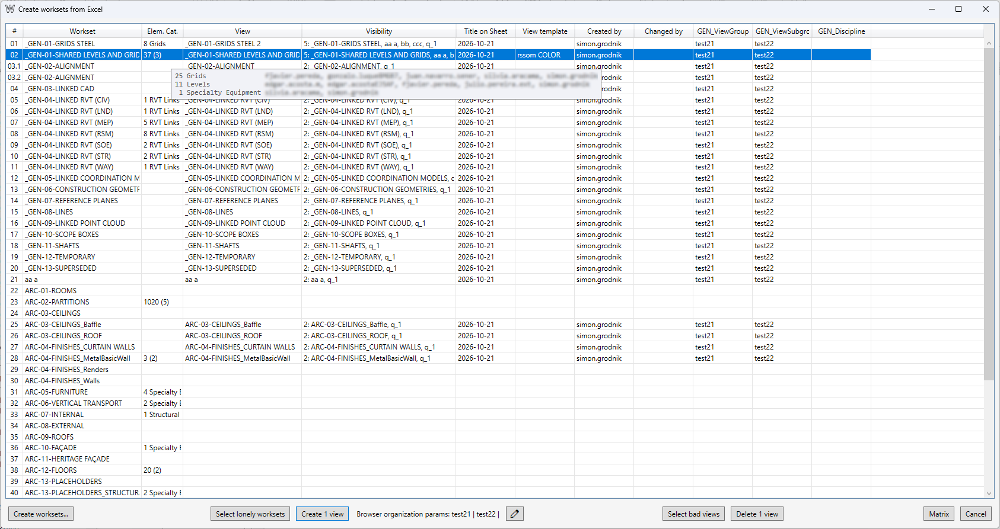
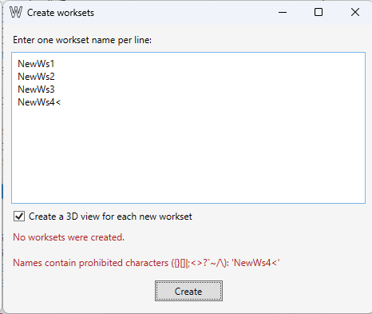
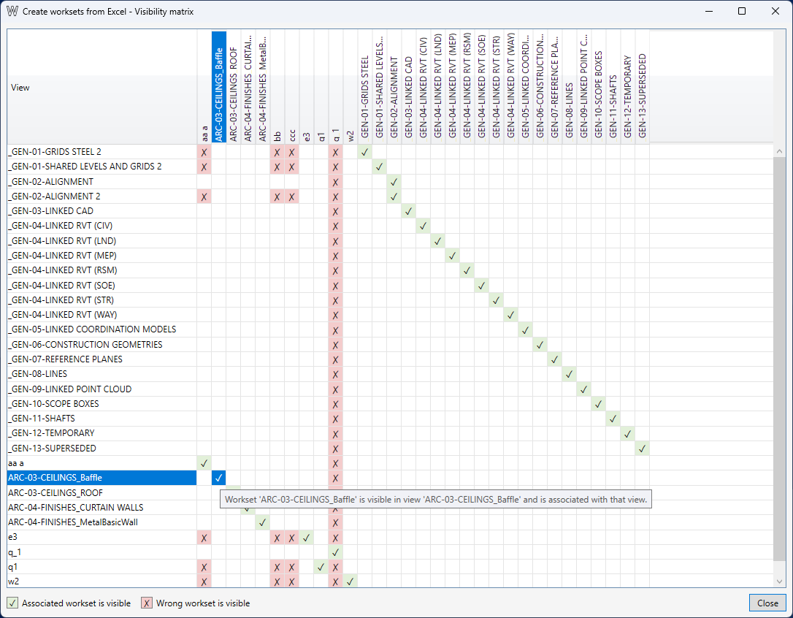

Worksets and 3D Views
Table of contents
The command displays user worksets, their associated 3D views, and information about their contents. Use it to find worksets without views, check visibility, create isolated views, and delete unwanted views.
Review Worksets and Views
The table lists user worksets, their contents, and associated 3D views. View templates are excluded.
- Workset — the workset name.
- Elem. Cat. — the number of elements and categories in the workset. Hover to see a category and user breakdown.
- View — the associated 3D view name. Double-click the row to open the view.
- Visibility — the number and names of visible worksets. Faded text means the view is correctly isolated: only its associated workset is visible. Hover to see the full list.
- Title on Sheet, View template, Created by, Changed by — the view description, assigned template, creator, and last modifier.
- Additional columns show values of the Browser Organization parameters, if configured in the document.

How Views Are Associated with Worksets
The association is determined by name: a view name must start with the full workset name. If more than one workset name matches the beginning of a view name, the longest matching name is used. Renaming a view can therefore change its association with a workset.
Find Worksets Without Views
Click Select lonely worksets to select rows for worksets without an associated 3D view. You can also select rows manually. The selected workset rows determine which worksets can be used to create views.
Create Isolated 3D Views
- Select one or more worksets. Use Select lonely worksets to quickly select worksets without views.
- Configure Browser Organization parameters if needed. See the section below.
- Click Create N views. The command creates one 3D view per selected workset and hides the other user worksets in each view.
If a view name is already in use, a numeric suffix is added to the workset name.
Create Worksets
Click Create worksets… and enter one name per line.
Select Create a 3D view for each new workset to create an isolated view for every new workset. Clear the checkbox to create worksets without creating views.
Creating worksets in a document without worksharing enables worksharing and clears the Undo history. Actions performed before this cannot be undone with Ctrl+Z.

Configure Browser Organization Parameters
Click the pencil button next to the current parameter values. The fields are determined by the view organization parameters in the active document.
Enter the values to use for new views. Existing values lists non-empty values already used in 3D views in the document. A blank field leaves the parameter unchanged.
Click Save to save the current values for this document. Use History to load previous values for this document or values saved for another document. These parameters apply to new views only; existing views are not changed.

Find Views with Incorrect Visibility
Click Select bad views to select rows where a view shows worksets other than the one associated with it. The Visibility column shows which worksets are visible in each view. Open a view by double-clicking its row, or delete it if it is no longer needed.
Visibility Matrix
Click Matrix to compare workset visibility across associated 3D views. Rows represent views; columns represent worksets visible in at least one of those views. The matrix shows current visibility and does not change it.
- A green cell with ✓ means the workset associated with the view is visible.
- A red cell with ✗ means another workset is visible.
- A blank cell means the workset is hidden in that view.

Delete 3D Views
Select the rows for the views to delete, then click Delete N views. The command deletes the selected 3D views, not the worksets. Revit warns that the operation may not be undoable with Ctrl+Z.
Work Log
2026-10-22: The command was redesigned. Instead of importing worksets from Excel, it now manages worksets and their associated 3D views through its interface.